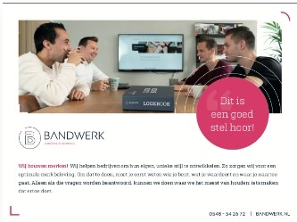
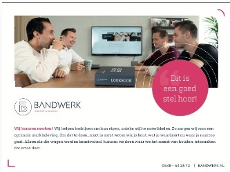

Bandwerk merkenbouwers: Trotse media partner van s.v. Rijssen
Nu nog rivalen, maar vanaf komend seizoen 2019-2020 gaan R.K.S.V. en Rijssen Vooruit samen verder. De nieuwe fusievereniging zal als “s.v. Rijssen” verder door het leven gaan. Samen zijn ze goed voor bijna tweehonderd jaar voetbalgeschiedenis in de Twentse Hanzestad: R.K.S.V. van 1 februari 1944 en Rijssen Vooruit van 1 juli 1909. Het zijn clubs met een roemrijke geschiedenis die in het verleden menig keer tegenover elkaar stonden. Het waren wedstrijden op het scherpst van de snede, waarin gestreden werd voor iedere meter. De derby tussen beide clubs staat zaterdag 4 mei voor het laatst op het programma, maar behoort daarna voorgoed tot het verleden.
De rivalen hebben elkaar gevonden. Ze willen samen verder. Als één club. Donderdagavond kwamen leden van R.K.S.V. en Rijssen Vooruit bij elkaar om te stemmen voor de fusie. 168 van de 170 stemgerechtigden van de bezoekers aan de informatieavond stemde voor. “Gezien de grootte en de levensvatbaarheid van beide verenigingen is het beter om samen verder te gaan, om samen tot een grotere stabiele vereniging te komen”, legt Wouter Beumer, voorzitter van de fusiewerkgroep, uit. “Afzonderlijk van elkaar hadden we het waarschijnlijk niet meer lang uitgehouden. Dit is daarom een unieke kans.”
De eerste gesprekken over een fusie tussen R.K.S.V. en Rijssen Vooruit dateren van twee jaar terug. In eerste instantie was ook Sportclub Rijssen bij de gesprekken betrokken, maar vanwege een gebrek aan draagvlak onder de leden trok die partij zich terug. “Uiteraard is dat sentiment er ook onder een aantal leden van R.K.S.V. en Rijssen Vooruit”, zegt Beumer. “Maar we proeven ook dat veel leden het voordeel van de fusie inzien. Dat we een mooi nieuw complex krijgen, een stabiele vereniging worden. Wel is de aanloop naar de fusie hectisch geweest. Onder meer vanwege de verkiezingen, waardoor we met een andere sportwethouder te maken kregen. Maar sinds oktober vorig jaar zijn de plannen in een versnelling geraakt.”
Na een periode van onderzoeken, werden donderdagavond de plannen van de fusieclub gepresenteerd aan de leden. De clubnaam “s.v. Rijssen” werd onthuld, evenals het logo en de kleding van de nieuwe vereniging. Daarnaast kregen de leden ook schetsontwerpen van het nieuwe sportcomplex te zien.
Hoewel de fusie nog niet officieel is beklonken, zijn de eerste tekenen van het samengaan van R.K.S.V. en Rijssen Vooruit al wel zichtbaar. Zo spelen de JO8 en JO9 van beide verenigingen sinds kort als één team samen in de competitie. De jeugd vormt ook een belangrijke pijler voor de toekomst van de fusieclub. “We richten ons in eerste instantie met name op de jeugd”, zegt Beumer. “Door samen te gaan kunnen we een fatsoenlijke jeugdopleiding opzetten. In elke leeftijdscategorie zullen we met minimaal één team vertegenwoordigd zijn. Met de nieuwe uitstraling van het sportpark en de nieuwbouwwijk die bij de vereniging wordt gebouwd, verwachten we ook veel aanwas van nieuwe jeugdleden. Richting de toekomst moet dat een mooie selectie voor het eerste elftal opleveren, met zelf opgeleide spelers en een eigen gezicht.”


 

Bandwerk merkenbouwers: Trotse media partner van s.v. Rijssen